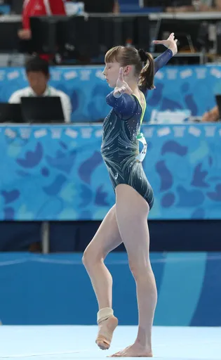

Reject an image by adding its slug to public/charades/charades-actions/reject.txt (append ! to keep it word-only), then re-run node scripts/genimages.mjs.
Escaping a maze escaping-a-maze CC BY 2.0 · CGP Grey · source
Greengrocer greengrocer CC BY-SA 4.0 · Dietmar Rabich · sourceGrilling grilling CC BY-SA 4.0 · Dietmar Rabich · source

Gymnastics gymnastics CC BY-SA 4.0 · Martin Rulsch, Wikimedia Commons · sourceHairdresser hairdresser Public Domain Mark · State Library of South Australia · source